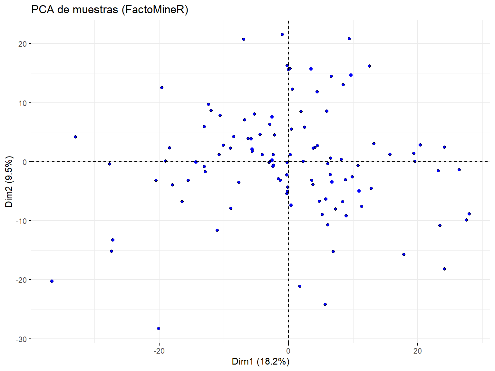
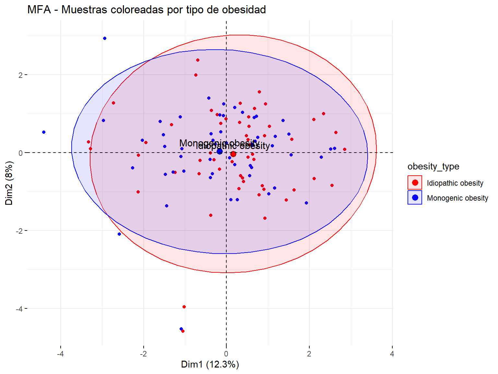
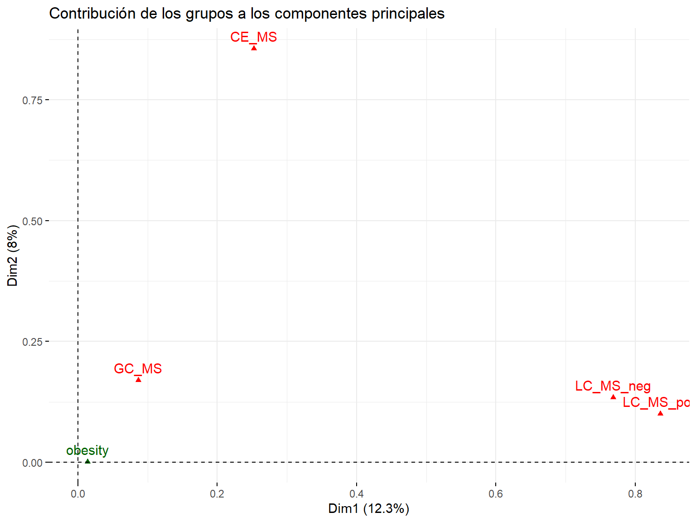
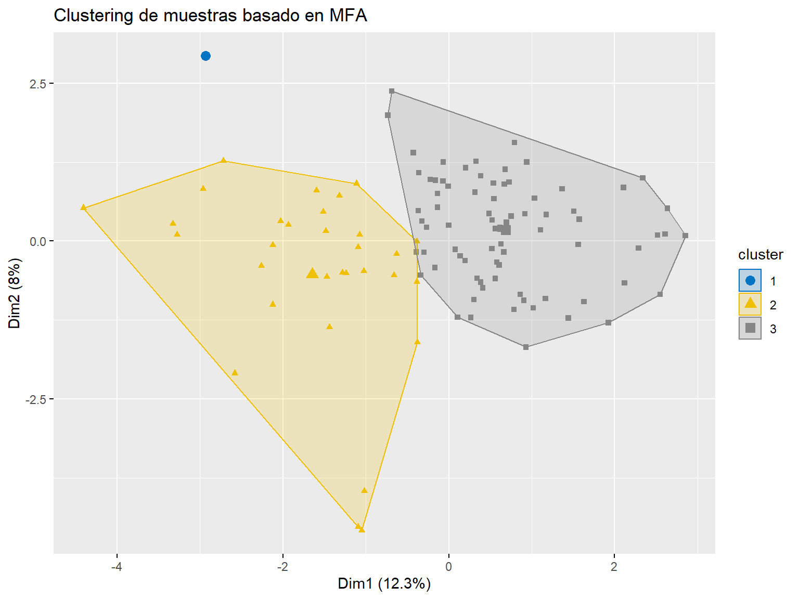

# Cargar tidyverse para manejo de datos
library(tidyverse)
# Directorio local donde has descargado los .txt
data_dir <- "../data" # CAMBIA esta ruta si es necesario
results_dir <- "../results"
# Cargar cada archivo
res13 <- read.delim(file.path(data_dir, "ST002993_AN004913_Results.txt"), check.names = FALSE)
res14 <- read.delim(file.path(data_dir, "ST002993_AN004914_Results.txt"), check.names = FALSE)
res16 <- read.delim(file.path(data_dir, "ST002993_AN004916_Results.txt"), check.names = FALSE)
res17 <- read.delim(file.path(data_dir, "ST002993_AN004917_Results.txt"), check.names = FALSE)
# Renombrar la primera columna en todos
colnames(res13)[1] <- "Feature_ID"
colnames(res14)[1] <- "Feature_ID"
colnames(res16)[1] <- "Feature_ID"
colnames(res17)[1] <- "Feature_ID"Reanálisis de resultados procesados - Estudio ST002993
Información del estudio
Este estudio se basa en el proyecto depositado en MetabolomicsWorkbench:
https://www.metabolomicsworkbench.org/data/DRCCMetadata.php?Mode=Project&ProjectID=PR001863
EL resumen del proyecto en el repositorio es el siguiente:
La obesidad es el resultado de una interacción entre la predisposición genética y factores ambientales como la dieta, la actividad física, la cultura y el nivel socioeconómico. Los tratamientos personalizados serían ideales, por lo que es necesario identificar características individuales que permitan mejorar la eficacia de las terapias. Por ejemplo, alteraciones genéticas en la vía leptina-melanocortina pueden provocar casos raros de obesidad grave de inicio temprano.
La metabolómica tiene el potencial de distinguir entre un estado saludable y uno obeso; sin embargo, diferenciar subgrupos de individuos dentro del espectro de la obesidad sigue siendo un reto. El análisis factorial puede integrar características clínicas y moleculares de los pacientes a partir de diversas fuentes, permitiendo una subclasificación precisa.
Este estudio presenta un flujo de trabajo para identificar metabotipos, especialmente en contextos donde los estudios clínicos convencionales no logran categorizar adecuadamente a los pacientes. Se estudiaron 110 niños con obesidad (IMC > +2 SDS), genotipados para nueve genes implicados en la vía leptina-melanocortina (CPE, MC3R, MC4R, MRAP2, NCOA1, PCSK1, POMC, SH2B1 y SIM1) y dos genes de receptores de glutamato (GRM7 y GRIK1). De ellos, 55 presentaban variantes raras heterocigotas y 55 no tenían variantes.
Se recogieron datos antropométricos y de laboratorio clínico rutinario, y las muestras de suero se procesaron para análisis metabolómicos no dirigidos utilizando GC-q-MS, CE-TOF-MS y U(H)PLC-QTOF-MS/MS en modos de ionización positiva y negativa. Tras el procesamiento de señales y la multialineación, se aplicaron análisis estadísticos multivariantes y univariantes para evaluar la asociación entre los rasgos genéticos y los datos metabolómicos y clínicos.
Ni la presencia de variantes genéticas raras heterocigotas ni los datos clínicos rutinarios permitieron identificar subgrupos dentro de los datos metabolómicos. Para descubrir subtipos metabolómicos, se aplicó análisis factorial1 sobre una matriz compuesta construida a partir de las cinco plataformas2 analíticas. Se identificaron seis factores y tres metabotipos distintos. Se observaron diferencias sutiles pero claras en los lípidos circulantes y en la sensibilidad a la insulina, lo que abre la posibilidad de personalizar el tratamiento en función de la clasificación del paciente dentro de estos subtipos de obesidad.
La identificación de metabotipos en contextos clínicos presenta desafíos debido a la influencia de múltiples variables no controladas sobre los fenotipos metabólicos. Sin embargo, esta estrategia demuestra su potencial para identificar subconjuntos de pacientes con diagnósticos clínicos similares pero con condiciones metabólicas distintas. Este enfoque pone de relieve la aplicabilidad del análisis factorial para el estudio de metabotipos en diversos escenarios clínicos.
Cargar archivos
Los datos se han descargado del repositorio a un subdirectorio ST002993. Para cada plataforma se dispone de dos tipos de archivo
- ST002993_AN0049XX.txt: Los metadatos
- ST002993_AN0049XX_Results.txt: Los datos preprocesados
XX: 13, 14, 16, 17
Resultados
En el estudio se usaron varias plataformas analíticas:
- AN004913 : LC-MS positivo
- AN004914 → LC-MS negativo
- AN004916 → CE-MS
- AN004917 → GC-MS
Segn la tecnología, la primera columna se indica como Mass_RT y Mass_MT que identifican cada pico metabolómico combinando la masa (m/z) con el tiempo.
Mass_RT se usa en LC-MS y GC-MS (tiempo de retención), mientras que Mass_MT se usa en CE-MS (tiempo de migración).
Ambos permiten identificar de forma única cada feature y pueden unificarse como Feature_ID.
Inspección básica y combinación
# Añadir columna 'platform' antes de combinar, para mantener la fuente de cada feature
res13$platform <- "LC_MS_pos"
res14$platform <- "LC_MS_neg"
res16$platform <- "CE_MS"
res17$platform <- "GC_MS"
# Reordenar columnas para asegurar consistencia (Feature_ID primero)
reorder_cols <- function(df) {
df[, c("Feature_ID", sort(setdiff(colnames(df), c("Feature_ID", "platform"))), "platform")]
}
res13_ord <- reorder_cols(res13)
res14_ord <- reorder_cols(res14)
res16_ord <- reorder_cols(res16)
res17_ord <- reorder_cols(res17)
# Combinar y guardar
combined_df <- bind_rows(res13_ord, res14_ord, res16_ord, res17_ord)
write.csv(combined_df,file.path(results_dir, "combined_results_aligned.csv"), row.names = FALSE)
# Guardar plataforma y ID antes del preprocesamiento
feature_ids <- combined_df$Feature_ID
platforms <- combined_df$platform
data_matrix <- combined_df[, !(colnames(combined_df) %in% c("Feature_ID", "platform"))]
rownames(data_matrix) <- feature_idsMetadatos
Los archivos de metadatos contienen la información de forma no estructurada por lo que se utilizan expresiones regulares para extraerla.
En primer lugar se obtiene el tipo de obesidad de cada individuo, determinado a partir de su análisis genético.
meta_files <- list.files(data_dir, pattern = "ST002993_AN0049[^_]*\\.txt$", full.names = TRUE)
all_factors <- map_dfr(meta_files, function(file) {
lines <- readLines(file)
factor_lines <- grep("SUBJECT_SAMPLE_FACTORS", lines, value = TRUE)
split_lines <- str_split(factor_lines, "\\t+", simplify = TRUE)
as_tibble(split_lines[, 1:5]) %>%
select(sample_id = V3, factor_info = V4) %>%
mutate(obesity_type = str_remove(factor_info, "Factor:")) %>%
select(sample_id, obesity_type)
})
# Eliminar duplicados (por si acaso)
all_factors <- distinct(all_factors)
# Verificar
head(all_factors)# A tibble: 6 × 2
sample_id obesity_type
<chr> <chr>
1 "" ""
2 "C842" "Idiopathic obesity"
3 "C1306" "Idiopathic obesity"
4 "C1317" "Idiopathic obesity"
5 "C1331" "Idiopathic obesity"
6 "C1336" "Idiopathic obesity"Las filas de la tabla se reordenan para que tengan el mismo orden que las columnas d ela matriz de datos
# Extraer el orden de las muestras (columnas)
sample_order <- colnames(data_matrix)
# Limpiar nombres (por si acaso)
all_factors <- all_factors %>%
mutate(sample_id = trimws(sample_id))
# Paso 3: Filtrar y reordenar los metadatos según los datos
metadata_aligned <- all_factors %>%
filter(sample_id %in% sample_order) %>%
arrange(factor(sample_id, levels = sample_order))
# Paso 4: Verificación
sum(metadata_aligned$sample_id == sample_order)[1] 110# Guardar
write.csv(all_factors,file.path(results_dir, "ST002993_sample_metadata.csv"), row.names = FALSE)Combinar datos y metadatos
Disponemos de dos tipos de metadatos - El tipo de obesidad, metadato de las muestras - El tipo de plataforma, metadato de los metabolitos (se omite el hecho de que algunos podrian ser el mismo)
Aunque es posible guardarlos como una matyriz y dos vectores de factores, es más elegante y práctico agruparlos en un contenedor de Bioconductor
library(SummarizedExperiment)
# Crear rowData con información de plataforma
row_data <- DataFrame(platform = platforms, row.names = feature_ids)
# Crear colData con metadatos alineados
col_data <- metadata_aligned %>%
column_to_rownames("sample_id") %>%
DataFrame()
# Comprobar alineación
stopifnot(all(colnames(data_matrix) == rownames(col_data)))
stopifnot(all(rownames(data_matrix) == rownames(row_data)))
# Crear objeto SummarizedExperiment con rowData
se <- SummarizedExperiment(
assays = list(counts = as.matrix(data_matrix)),
colData = col_data,
rowData = row_data
)
# Ver estructura
seclass: SummarizedExperiment
dim: 892 110
metadata(0):
assays(1): counts
rownames(892): 103.0999_0.77 103.9848_0.77 ... 125.0152_21.53
367.1848_21.52
rowData names(1): platform
colnames(110): C1030 C1131 ... M962 M996
colData names(1): obesity_typeAcceso a los “slots”
Una vez creado el objeto SummarizedExperiment podemos extraer la matriz de expresión y los metadatos facilmente.
matriz <- assay(se) # también puedes usar assay(se, "counts") si hay varios assays
# üîπ 2. Extraer los metadatos (informaci√≥n de las muestras)
infoMuestras <- colData(se)
df_infoMuestras <- as.data.frame(infoMuestras) # convertir a data.frame clásico
infoVars <- rowData(se)
df_infoVars <- as.data.frame(infoVars) # convertir a data.frame clásico
# üîπ 3. Ver nombres de muestras y metabolitos
muestras <- colnames(se)
metabolitos <- rownames(se)
# Mostrar ejemplos
head(matriz[, 1:5]) C1030 C1131 C1133 C1171 C1204
103.0999_0.77 38821.76 40447.97 56677.53 44426.47 46114.93
103.9848_0.77 32147.61 28046.14 31520.55 31189.66 31365.98
113.0591_0.79 38483.06 44383.50 36327.01 45701.52 56593.10
115.063_0.79 10863.39 11022.03 8331.93 10238.20 12085.90
117.0788_0.79 91602.31 99711.00 172177.27 114091.65 112652.74
131.07_0.75 20844.59 18283.11 16641.86 13725.49 12609.90Preprocesamiento
Empezamos extrayendo la matriz de datos del contenedor.
data_matrix <- assay(se, "counts")Filtrado
Si hay NAs eliminaremos las muestras que superen un porcentaje dado.
if (anyNA(data_matrix)) {
message("Se han detectado valores NA. Aplicando filtrado e imputación...")
# Filtrado: eliminar features con más del 20% de NA
na_prop <- rowMeans(is.na(data_matrix))
data_matrix_filt <- data_matrix[na_prop <= 0.2, ]
# Imputación: reemplazar NA con el mínimo valor positivo de cada muestra
data_matrix_imp <- apply(data_matrix_filt, 2, function(x) {
x[is.na(x)] <- min(x[x > 0], na.rm = TRUE)
x
})
} else {
message("No se han detectado valores NA. Continuando sin filtrado ni imputación.")
data_matrix_imp <- data_matrix
}Normalización
# Normalizar por suma total (TIC-like)
# data_matrix_norm <- sweep(data_matrix_imp, 2,
# colSums(data_matrix_imp),
# FUN = "/")
# Transformación logarítmica
log_data <- log2(data_matrix_imp + 1)
# Escalado z-score por muestra (centra y escala cada perfil)
data_matrix_norm <- t(scale(t(log_data)))Los datos normalizados se añaden como un nuevo slot al contenedor
# Añadir como nuevo assay al objeto SummarizedExperiment
assay(se, "data_matrix_norm") <- data_matrix_norm# Guardar tabla final
write.csv(data_matrix_norm,file.path(results_dir,"results_filtered_normalized.csv"))Exploración de los datos
boxplot(
t(data_matrix_norm),
horizontal = TRUE,
main = "Distribución de intensidades normalizadas por metabolito",
xlab = "Intensidad (log2, escalada)",
col = "lightblue",
border = "grey40",
outline = FALSE,
las = 1,
cex.axis = 0.6,
cex.main = 0.9,
cex.lab = 0.6
)Análisis de correlacion
library(corrplot)
# Calcular matriz de correlaciones entre muestras
cor_muestra <- cor(assay(se, "data_matrix_norm"))
dim(cor_muestra)[1] 110 110# Visualizar con corrplot
corrplot(cor_muestra,
method = "color",
type = "upper",
order = "hclust",
tl.cex = 0.6,
col = colorRampPalette(c("blue", "white", "red"))(200),
title = "Correlación entre muestras",
mar = c(0, 0, 1, 0))Analisis factoriales
Empezamos con un PCA
library(FactoMineR)
library(factoextra)
# Transponer datos: individuos = muestras, variables = metabolitos
pca_res <- PCA(t(data_matrix_norm), graph = FALSE)
# Scree plot: porcentaje de varianza explicada por cada componente
fviz_eig(pca_res, addlabels = TRUE, barfill = "skyblue", barcolor = "black") +
ggtitle("Scree plot - varianza explicada")# Gráfico PCA con muestras
fviz_pca_ind(pca_res,
geom.ind = "point",
pointshape = 21,
fill.ind = "blue",
col.ind = "black",
repel = TRUE) +
ggtitle("PCA de muestras (FactoMineR)")
MFA
## Análisis factorial múltiple (MFA)
library(FactoMineR)
library(factoextra)
# 1. Matriz de expresión
X <- t(assay(se, "data_matrix_norm"))
# 2. Preparar data.frame y añadir variable cualitativa
X_df <- as.data.frame(X)
X_df$obesity_type <- colData(se)$obesity_type
# 3. Preparar info de grupos
platforms <- rowData(se)$platform
vars_by_platform <- split(rownames(se), platforms)
X_df <- X_df[, c(unlist(vars_by_platform), "obesity_type")]
group_sizes <- c(sapply(vars_by_platform, length), 1)
group_types <- c(rep("c", length(vars_by_platform)), "n") # última es cualitativa
group_names <- c(names(vars_by_platform), "obesity")
# 4. Ejecutar MFA
res_mfa <- MFA(
base = X_df,
group = group_sizes,
type = group_types,
name.group = group_names,
num.group.sup = length(group_sizes), # última posición es suplementaria
graph = FALSE
)fviz_screeplot(res_mfa, addlabels = TRUE, ylim = c(0, 50))# 5. Visualizar individuos (muestras)
fviz_mfa_ind(
res_mfa,
habillage = "obesity_type",
addEllipses = TRUE,
palette = c("red", "blue"), # Colores personalizados
label = "none", # No mostrar etiquetas de muestras
repel = FALSE,
title = "MFA - Muestras coloreadas por tipo de obesidad"
)
# Extraer información de variables y grupos
mfa_vars <- get_mfa_var(res_mfa)
# Visualizar contribución de grupos a los ejes (automáticamente)
fviz_mfa_var(
res_mfa,
"group",
palette = "Dark2",
title = "Contribución de los grupos a los componentes principales"
)
Matriz de factores
El análisis factorial (múltiple) genera una nueva matriz con las mismas filas y los factores o variables latentes como columnas.
Esta nueva matriz puede utilizarse de forma implícita o explícita para análisis posteriores como la búsqueda de metabotipos.
factor_coords <- res_mfa$ind$coord
# Ver dimensiones
dim(factor_coords)[1] 110 5# Visualizar primeras filas
head(factor_coords) Dim.1 Dim.2 Dim.3 Dim.4 Dim.5
C1030 -0.6321534 -0.2029206 -0.2409442 -0.19341785 -0.9538281
C1131 -2.7197222 1.2718608 -0.3780766 -1.19539167 0.8745664
C1133 0.3053819 -0.9254186 0.1501404 0.06059781 -0.2166434
C1171 -0.2994113 -0.1788080 0.1994838 -0.54755132 -0.6400878
C1204 -1.2388472 -0.5104731 0.9027184 -1.19008276 0.2045216
C1222 2.3403716 1.0010518 1.5032099 -0.06406640 -0.3264256Clustering y obesidad
üîç Clustering y relaci√≥n con la obesidad
# 11. Clustering jerárquico sobre los factores
res_hcpc <- HCPC(res_mfa, graph = FALSE)
# 12. Visualización de clústeres
fviz_cluster(
res_hcpc,
geom = "point",
palette = "jco",
repel = TRUE,
show.clust.cent = TRUE,
main = "Clustering de muestras basado en MFA"
)
# 13. Comparar clúster con tipo de obesidad
cluster_assignments <- res_hcpc$data.clust$clust
obesity_type <- colData(se)$obesity_type
table(Cluster = cluster_assignments, Obesity = obesity_type) Obesity
Cluster Idiopathic obesity Monogenic obesity
1 0 1
2 14 17
3 41 37Almacenaje de datos y resultados
save(se, res_mfa, factor_coords, res_hcpc, file =file.path(results_dir, "ST002993_processed_objects.RData"))
# Guardar tabla final
write.csv(factor_coords,file.path(results_dir,"factor_matrix.csv"))